class: center, middle # Le traitement de l'information ## Le codage des nombres <img height="350px" src="img/data_processing.png"> --- ## La base décimale * Nous utilisons le système décimal pour représenter les nombres * Ce système est aussi appelé **"Base 10"** * 10 symboles sont à notre disposition : <img height="350px" src="img/chiffres.avif"> --- ## La base décimale * Basé sur dix symboles * Avec une unité supérieure (dizaine, centaine, etc.) à chaque fois que dix unités sont comptabilisées. * C'est un **système positionnel**, c'est-à-dire que l'endroit où se trouve le symbole définit sa valeur. <p>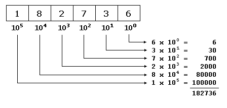</p> --- ## La base binaire * Un ordinateur utilise le système binaire pour représenter les nombres * Ce système est aussi appelé **"Base 2"** * 2 symboles sont à notre disposition : <div style="text-align: center;"> <span style="font-size: 600%; margin-right: 200px;">0</span> <span style="font-size: 600%;">1</span> </div> --- ## La base binaire <div style="text-align: center; margin-top: 100px;"> <p>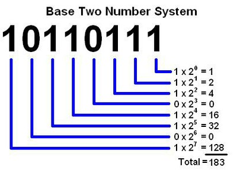</p> </div> --- ## Addition / Soustraction en binaire → Démonstration au tableau --- ## Le "demi-additionneur" en circuit logique <div style="text-align: center;"> <p>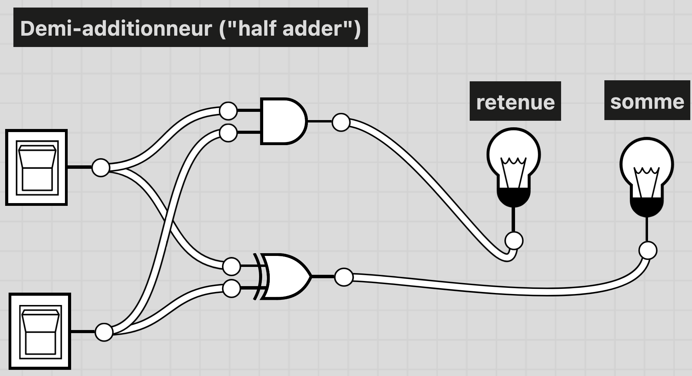</p> </div> --- ## Le "demi-additionneur" en circuit logique Additionner deux bits A et B produit **deux** résultats, exactement comme au tableau : le chiffre écrit (la **somme**) et le chiffre reporté dans la colonne suivante (la **retenue**). En binaire, 1 + 1 = 0, je retiens 1. * La **somme** vaut 1 quand **un seul** des deux bits vaut 1 → porte **XOR** (OU exclusif) * La **retenue** vaut 1 uniquement quand **les deux** bits valent 1 → porte **AND** (ET) Sur le schéma : les deux interrupteurs de gauche sont les bits A et B, les deux ampoules de droite affichent la retenue et la somme. Le circuit ne "calcule" rien : il applique mécaniquement deux règles logiques → **du traitement purement formel**. --- ## Le "demi-additionneur" en circuit logique Sa table de vérité tient en quatre lignes : ``` A B | retenue somme (en binaire) ---------+------------------ 0 0 | 0 0 0 + 0 = 00 0 1 | 0 1 0 + 1 = 01 1 0 | 0 1 1 + 0 = 01 1 1 | 1 0 1 + 1 = 10 ``` Sa limite : il n'a que **deux** entrées. Il sait donc traiter la colonne la plus à droite d'une addition, mais pas les suivantes, puisqu'il est incapable de recevoir la retenue venue de la colonne précédente. <span style="font-size:150%; color:red;">→ D'où l'additionneur complet</span> --- ## L' "additionneur complet" en circuit logique <div style="text-align: center;"> <p>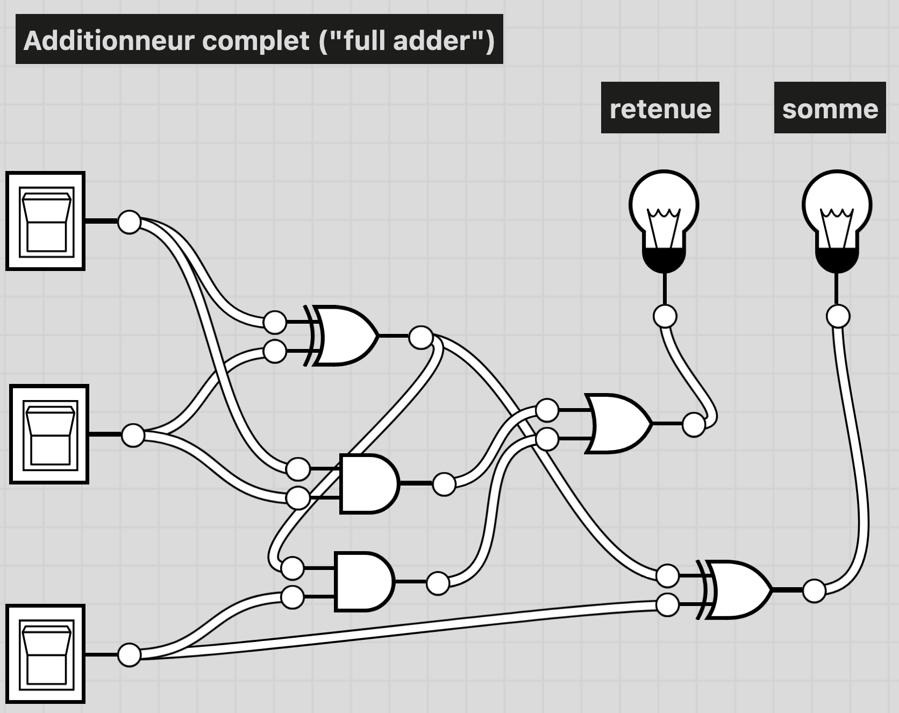</p> </div> --- ## L' "additionneur complet" en circuit logique L'additionneur complet ajoute une **troisième entrée** : la **retenue entrante** (celle produite par la colonne précédente). Il additionne donc A + B + retenue entrante, et fournit à son tour une somme et une **retenue sortante**. * **somme** = A XOR B XOR retenue entrante → les deux portes XOR du schéma * **retenue sortante** = 1 dès qu'au moins deux des trois entrées valent 1 → les deux portes AND, regroupées par la porte OR Sur le schéma : trois interrupteurs à gauche (A, B et la retenue entrante), les deux mêmes ampoules à droite. --- ## L' "additionneur complet" en circuit logique En **mettant bout à bout n additionneurs complets** — la retenue sortante de l'un devenant la retenue entrante du suivant — on obtient un circuit capable d'additionner deux nombres de n bits. C'est ce que contient l'unité de calcul (l'ALU) d'un processeur : additionner des nombres de 32 ou 64 bits ne demande que la répétition de ce même petit circuit. Quelques conséquences à retenir : * Toutes les opérations arithmétiques se ramènent à des **combinaisons de portes logiques**, elles-mêmes réalisées avec des transistors. * La soustraction ne nécessite aucun circuit supplémentaire : grâce au **complément à deux**, soustraire revient à additionner l'opposé. * Le nombre d'additionneurs chaînés fixe la taille des nombres manipulés : au-delà, la dernière retenue est perdue → **dépassement de capacité** (*overflow*). --- ## La base hexadécimale * On utilise aussi très souvent le système hexadécimal du fait de sa simplicité d'utilisation et de représentation pour les mots machines (il est bien plus simple d'utilisation que le binaire). * Ce système est aussi appelé **"Base 16"** * 16 symboles sont à notre disposition : <div style="text-align: center;"> <span style="font-size: 480%;">0 1 2 3 4 5 6 7 8 9 A B C D E F</span> </div> --- ## La base hexadécimale <p>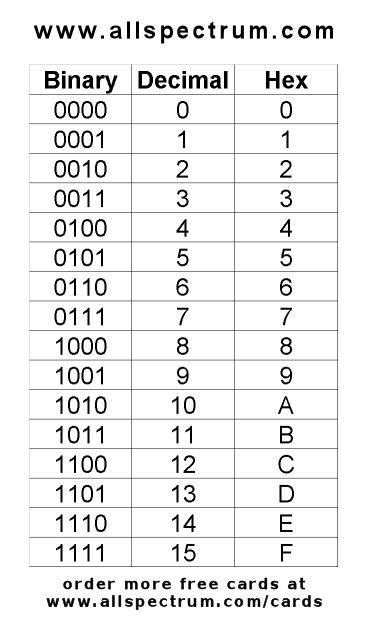</p> --- ## Conversion décimal → binaire <div style="text-align: center;"> <p>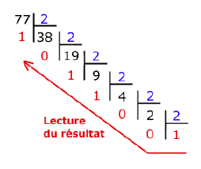</p> </div> --- ## Conversion décimal → binaire **Pourquoi est-ce qu'en calculant les restes et en les écrivant à l'envers, on obtient bien l'écriture binaire du nombre ?** On effectue des divisions euclidiennes successives, ce qui correspond à chercher quelles puissances de 2 doivent être additionnées afin d'obtenir le nombre décimal initial. → Démonstration au tableau --- ## Système vicésimal des Mayas (base 20) <div style="text-align: center; margin-top: 100px;"> <p>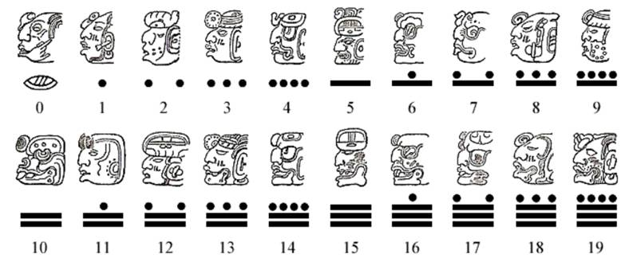</p> </div> --- ## Système vicésimal des Mayas (base 20) Que valent ces nombres en décimal ? <div style="text-align: center; margin-top: 100px;"> <p>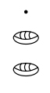</p> <p>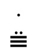</p> </div> --- ## La représentation des nombres entiers ### Entiers naturels * Nombre entier naturel = nombres positifs ou nul * Codage sur n bits → représentation des nombres entre 0 et 2<sup>n</sup>-1 * Exemples : * 9 = 00000101 * 128 = 10000000 * 255 = 111111111 ### Entiers relatifs * Nombre entier relatif = nombres entiers pouvant être négatifs * Coder le nombre de telle façon que l'on puisse savoir s'il s'agit d'un nombre positif ou d'un nombre négatif * Un **entier relatif positif ou nul** sera représenté en binaire comme un entier naturel, à la seule différence que le bit de poids fort (le bit situé à l'extrême gauche) représente le signe. * Un **entier relatif négatif** sera représenté en binaire à l'aide du **complément à deux** --- ## La représentation des nombres entiers ### Entiers relatifs Ainsi, si on code un entier naturel sur 4 bits, le nombre le plus grand sera 0111 (c'est-à-dire 7 en base décimale). * Sur 8 bits (1 octet), l'intervalle de codage est [-128, 127]. * Sur 16 bits (2 octets), l'intervalle de codage est [-32768, 32767]. * Sur 32 bits (4 octets), l'intervalle de codage est [-2147483648, 2147483647]. * D'une manière générale le plus grand entier relatif positif codé sur n bits sera 2<sup>n-1</sup>-1. → démonstration au tableau --- ## La représentation des nombres entiers ### Entiers relatifs <div style="text-align: center; margin-top: 100px;"> <p>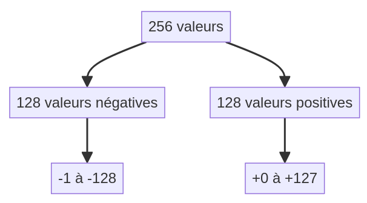</p> </div> --- ## La représentation des nombres entiers ### Entiers relatifs #### Exercice 1 Codez les entiers relatifs suivants sur 8 bits (16 si nécessaire) : 456, -1, -56, -5642. #### Exercice 2 Que valent en base dix les trois entiers relatifs suivants ? * 01101100 * 11101101 * 1010101010101010 --- ## La représentation des nombres réels * Rappel : un nombre réel est un nombre qui possède une partie décimale * En base 10, l'expression 652,375 est une manière abrégée d'écrire : 6·10<sup>2</sup> + 5·10<sup>1</sup> + 2·10<sup>0</sup> + 3·10<sup>-1</sup> + 7·10<sup>-2</sup> + 5·10<sup>-3</sup>. * En base 2, c'est le même principe : l'expression 110,101 signifie : 1·2<sup>2</sup> + 1·2<sup>1</sup> + 0·2<sup>0</sup> + 1·2<sup>-1</sup> + 0·2<sup>-2</sup> + 1·2<sup>-3</sup>. --- ## La représentation des nombres réels ### Conversion base 2 → base 10 <div style="text-align: center; margin-top: 50px;"> <p>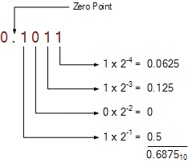</p> </div> Exercices : * Transformez 0,0101010101 en base 10. * Transformez 11100,10001 en base 10. --- ## La représentation des nombres réels ### Conversion base 10 → base 2 Le passage de base 10 en base 2 est plus subtil. Par exemple : convertissons 1234,347 en base 2. * La partie entière se transforme comme telle que 1234 = 10011010010 * La partie décimale se transforme de cette manière : ``` 0,347·2 = 0,694 0,347 = 0,0... 0,694·2 = 1,388 0,347 = 0,01... 0,388·2 = 0,766 0,347 = 0,010... 0,766·2 = 1,552 0,347 = 0,0101... 0,552·2 = 1,104 0.347 = 0,01011... 0,104·2 = 0,208 0,347 = 0,010110... 0,208·2 = 0,416 0,347 = 0,0101100... 0,416·2 = 0,832 0,347 = 0,01011000... 0,832·2 = 1,664 0,347 = 0,010110001... 0,664·2 = 1,328 0,347 = 0,0101100011... 0,328·2 = 0,656 0,347 = 0,01011000110... ``` On s'arrête lorsqu'on a atteint la précision désirée... --- ## La représentation des nombres réels ### Conversion base 10 → base 2 <span style="color: red;">Attention ! Un nombre à développement décimal fini en base 10 ne l'est pas forcément en base 2. Cela peut engendrer de mauvaises surprises.</span> Exemple avec 0,325 ``` 0.325·2 = 0.650 0.650·2 = 1.300 0.300·2 = 0.600 0.600·2 = 1.200 0.200·2 = 0.400 0.400·2 = 0.800 0.800·2 = 1.600 0.600·2 = 1.200 0.200·2 = ... ``` → Récurrence (calcul infini) --- ## La représentation des nombres réels ### Conversion base 10 → base 2 Existe-t-il des nombres à développement décimal fini en base 2 ? -- Oui ! * 0,5 * 0,25 * 0,75 * 0,625 * ... --- ## La représentation des nombres réels ### Conversion base 10 → base 2 On observe donc une limite : **certains nombres réels ne peuvent pas être exactement représentés en binaire...** → démonstration au tableau → démonstration au tableau --- ## La représentation des nombres entiers ### Base 2 → Base 16 * il suffit de faire des groupes de quatre bits (en commençant depuis la droite) * Exemple : 1001101 * Rajouter un 0 non significatif (à gauche) : 01001101 * Faire des "paquets" de 4 bits (en commençant par la droite) : 0100 1101 * Convertir chaque "paquets" en base 16 : 1101 → D, 0100 → 4 * 01001101 = 4D ### Base 16 → Base 2 * il suffit de lire chaque symbole et de les convertir en binaire ### Exercices * Donnez la méthode pour passer de la base décimale à la base hexadécimale (dans les deux sens). * Écrivez en Javascript un programme permettant de convertir un nombre d'une base de départ d vers une base d'arrivée a (d et a compris entre 2 et 16). --- ## Sources des images * https://doc.infoforall.fr/activite/donnees/images/binaire/relatifs_256.png * https://www.electronics-tutorials.ws/wp-content/uploads/2017/06/bin13.gif?fit=234%2C203